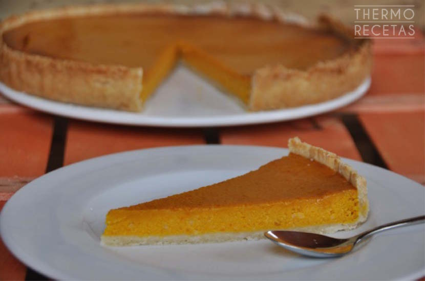
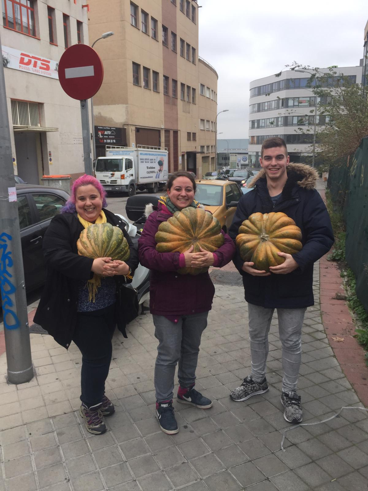

Tarta de Calabaza
Introducción
La tarta de calabaza es una excelente opción para aprovechar
las calabazas decoratias de halloween (ya sean propias o ajenas) y sirve para utilizar el regalo del amigo invisible.
Además el comprar un molde para ella nos abre las puertas al maravilloso mundo de las quiches


Ingredientes
- 1 kg de calabaza
- masa quebrada
- 140 gr de nata
- 90 gr de maicena
- 30 gr azucar moreno
- 8 gr canela
- 90 gr margarina
- 5 gr aroma vainilla
- 5 gr jenjibre en polvo
- 5 gr nuez moscada
- sal
Pasos
- 50 minutos en el horno a 180ºC
- probar con un palillo si está hecha
Volver al enunciado